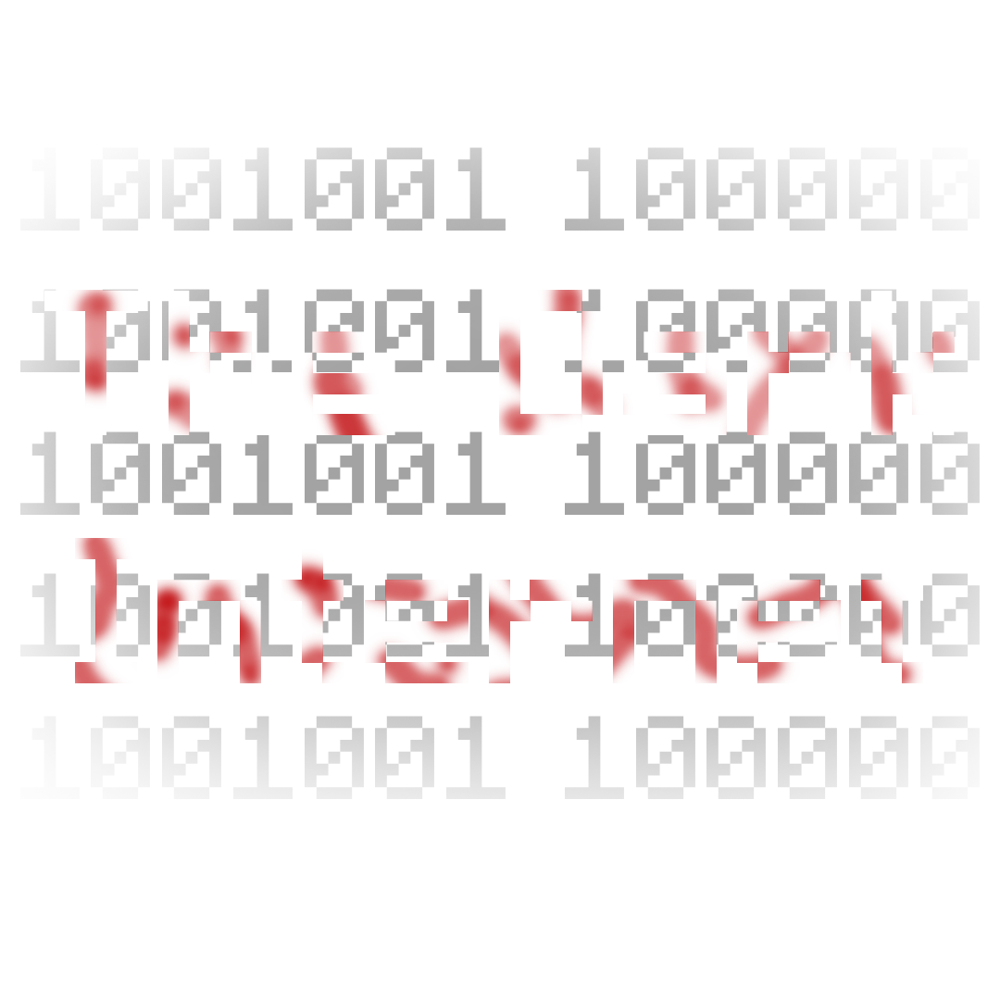

A MINECRAFT MAP BY LAINPROTV

Your favourite horror game,
rebuilt block by block.Release date: 27th April 2022
STEP INSIDE THE MAP11 PHOTOS + 01 VIDEO
The living room
READY TO STEP INSIDE?
Download the map.
Minecraft Java Edition · 1.19.4 vanilla or OptiFine
Download VIA GOOGLE DRIVE
Google Drive may ask you to confirm the download.